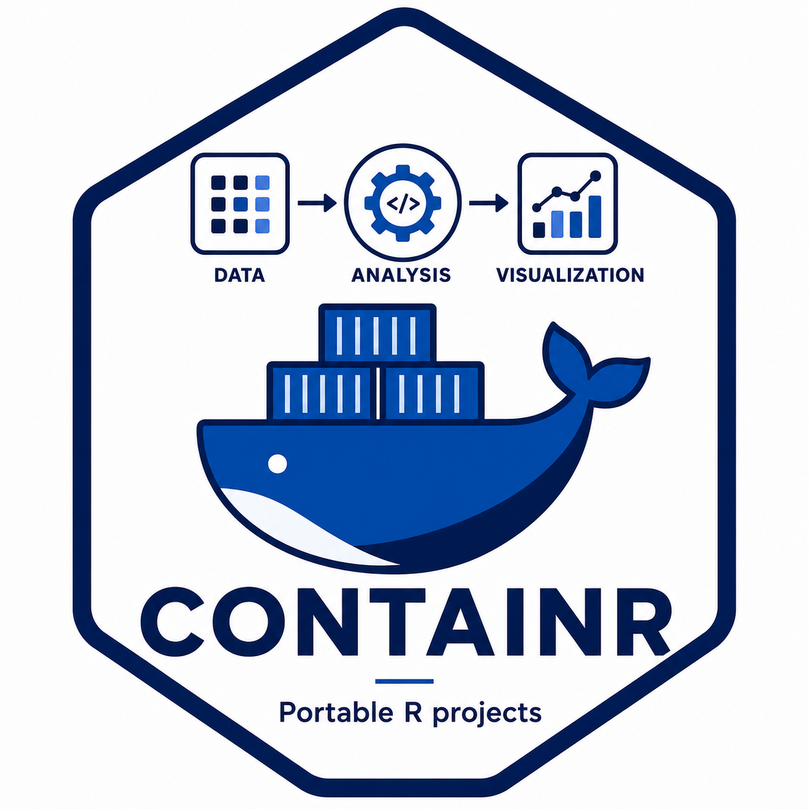

A first containerization workflow with containr
Created 2026-04-30 | Last updated 2026-05-13
Source:vignettes/containr-workflow.Rmd
containr-workflow.Rmd
Before you start
This vignette walks through the complete containr
workflow: generating a Dockerfile, building a container
image, inspecting local images, and pushing the image to a registry. It
assumes you are comfortable with R and have some familiarity with the
idea of containers. If you are new to containers and want to understand
why they complement renv rather than replace it, start with
the companion vignette From renv to containers: why recording your R
packages may not be enough.
Before running any of the code below, confirm that:
- your project uses
renvandrenv.lockexists in the project root; - Podman or Docker is installed and running;
- you have access to a container registry if you plan to push the image.
At UW-Madison, registry.doit.wisc.edu is the default
registry for the CHTC-oriented workflow. The authentication guide,
including how to create a Personal Access Token with the right scopes,
is at https://git.doit.wisc.edu/ERWIN.LARES/container-registry.
If you are working through this vignette for the first time,
dry_run = TRUE is available on build_image()
and push_image(). It prints the command that would be run
without executing it. Use it freely until you are confident in each
step.
Step 1: Generate a Dockerfile
generate_dockerfile() reads your renv.lock,
infers the system library requirements of your R packages, and writes a
Dockerfile in the project root. It is the entry point into
the containr workflow and the step that does the most work
on your behalf.
generate_dockerfile(
r_version = "4.4.0",
output = ".",
comments = TRUE
)The r_version argument should match the R version
recorded in your renv.lock. Using a consistent R version
between your lockfile and your base image reduces the chance of package
installation failures inside the container.
The comments = TRUE argument annotates each instruction
in the generated Dockerfile with an explanation of what it
does. This is useful when you are learning containerization or reviewing
the file with collaborators. Here is what the generated
Dockerfile looks like with comments enabled:
# Base image: rocker/r-ver provides a minimal R installation on Ubuntu.
# Pinning the R version ensures the container matches your renv.lock.
FROM rocker/r-ver:4.4.0
# Suppress interactive prompts during apt-get package installation.
ENV DEBIAN_FRONTEND=noninteractive
# Install system libraries required by your R packages.
# These are inferred from the packages recorded in renv.lock.
RUN apt-get update && apt-get install -y \
curl \
git \
libcurl4-openssl-dev \
libssl-dev \
libxml2-dev \
libgit2-dev \
cmake \
make \
libfreetype6-dev \
libjpeg-dev \
libpng-dev \
libtiff-dev \
libfontconfig1-dev \
libfribidi-dev \
libharfbuzz-dev \
pandoc \
&& apt-get clean \
&& rm -rf /var/lib/apt/lists/*
# Set the working directory inside the container.
WORKDIR /home
# Copy renv.lock into the container so renv can restore the R package
# environment at build time.
COPY renv.lock /home/renv.lock
# Install renv from CRAN, then restore the R package environment from
# renv.lock. This step reproduces your exact package versions inside
# the container.
RUN R -e "install.packages('renv', repos='https://packagemanager.posit.co/cran/latest')"
RUN R -e "renv::restore()"The Dockerfile is a plain text file. You can inspect it,
edit it, and regenerate it as many times as needed. If your project has
unusual system library requirements that
generate_dockerfile() did not catch, add them to the
install_syslibs argument:
generate_dockerfile(
r_version = "4.4.0",
output = ".",
install_syslibs = c("libuv1-dev", "libwebp-dev")
)If your project uses RStudio Server rather than plain R, pass
r_mode = "rstudio" to use the rocker/rstudio
base image instead:
generate_dockerfile(
r_version = "4.4.0",
r_mode = "rstudio",
output = "."
)Take a few minutes to read the generated Dockerfile
before moving on. Understanding what it does makes the subsequent steps
easier to reason about and debug if something goes wrong.
Step 2: Build the image
build_image() passes your Dockerfile to
Podman or Docker and builds the image locally. The first build pulls the
base image and installs every R package in your renv.lock
from scratch, so it can take several minutes depending on the size of
your package library and your network connection.
build_image(verbose = TRUE)With verbose = TRUE, the build output streams to the
console so you can watch the installation progress. The output looks
something like this:
ℹ Building image from Dockerfile in /home/user/my-analysis
ℹ Running: podman build -t my-analysis .
STEP 1/7: FROM rocker/r-ver:4.4.0
STEP 2/7: ENV DEBIAN_FRONTEND=noninteractive
STEP 3/7: RUN apt-get update && apt-get install -y ...
...
STEP 6/7: RUN R -e "install.packages('renv', ...)"
STEP 7/7: RUN R -e "renv::restore()"
✔ Image built successfully: my-analysisIf you want to preview the build command without running it:
build_image(dry_run = TRUE)
#> podman build -t my-analysis .Subsequent builds are usually faster because Podman and Docker cache
layers. If only your renv.lock changed, the system library
installation step is reused from cache and only the R package
installation step reruns.
A common first-build failure is a missing system library. If
renv::restore() fails inside the container with a message
about a missing header file or a failed compilation, add the relevant
library to install_syslibs in
generate_dockerfile(), regenerate the
Dockerfile, and rebuild.
Step 3: Inspect local images
list_images() returns a data frame of images in the
local image store. It is the R equivalent of
podman image ls or docker image ls.
imgs <- list_images()
imgs repository tag image_id created size
1 registry.doit.wisc.edu/your.netid/my-analysis 1.0.0 974123909a36 2 hours ago 1.59 GB
2 <none> <none> 3b8f20dc1a47 3 hours ago 1.21 GBThe image_id column contains the hash you pass to
push_image(). Untagged images — those built without a name
— appear with <none> in the repository
and tag columns. These accumulate during development as you
rebuild with different settings and can be pruned periodically.
Use imgs$image_id[1] to pass the most recently built
image to the next step, or select a specific row if you have multiple
images and want to push a particular one.
Step 4: Push the image to the registry
push_image() tags a local image with a registry path and
pushes it to a container registry. Before pushing, authenticate with the
registry once in a terminal. containr checks whether you
are logged in before attempting the push and errors with clear
instructions if not.
push_image(
image_id = imgs$image_id[1],
netid = "your.netid",
project = "my-analysis",
tag = "1.0.0"
)The push output looks something like this:
ℹ Tagging image 974123909a36 as
registry.doit.wisc.edu/your.netid/my-analysis:1.0.0
ℹ Pushing to registry.doit.wisc.edu/your.netid/my-analysis:1.0.0
...
✔ Image pushed successfully.
ℹ Image URI: docker://registry.doit.wisc.edu/your.netid/my-analysis:1.0.0To preview the tag and push commands without running them:
push_image(
image_id = imgs$image_id[1],
netid = "your.netid",
project = "my-analysis",
tag = "1.0.0",
dry_run = TRUE
)
#> podman tag 974123909a36 registry.doit.wisc.edu/your.netid/my-analysis:1.0.0
#> podman push registry.doit.wisc.edu/your.netid/my-analysis:1.0.0A note on tagging: use explicit version tags like
"1.0.0" rather than "latest". The
"latest" tag is overwritten on every push, which makes it
difficult to reconstruct which image was used for a specific result. An
explicit version tag ties the image to a specific state of the analysis
and can be referenced unambiguously in submit files, documentation, and
data management plans.
Putting it together
The complete workflow from a project with a renv.lock to
a pushed container image takes four function calls:
library(containr)
# 1. Generate the Dockerfile
generate_dockerfile(
r_version = "4.4.0",
output = ".",
comments = TRUE
)
# 2. Build the image
build_image(verbose = TRUE)
# 3. Inspect local images
imgs <- list_images()
# 4. Push to the registry
push_image(
image_id = imgs$image_id[1],
netid = "your.netid",
project = "my-analysis",
tag = "1.0.0"
)The image URI returned by push_image() is the reference
you pass to any downstream workflow that needs to run the containerized
analysis. For HTCondor submissions, it goes in the submit file:
container_image = docker://registry.doit.wisc.edu/your.netid/my-analysis:1.0.0The submitr package handles the next step: generating
the submit file, uploading files to the submit node, dispatching the
job, and retrieving results. You can stop here if your goal is a
portable, shareable R environment, and return to submitr
when the project is ready to run on CHTC.
Troubleshooting
The build fails with a missing system library. Add
the library to install_syslibs in
generate_dockerfile(), regenerate, and rebuild. The error
message from the failed compilation usually names the missing library or
header file directly.
renv::restore() fails inside the
container. Check whether the package requires a system library
that generate_dockerfile() did not infer automatically.
Packages with compiled C or C++ code are the most common source of this
problem.
push_image() errors with an authentication
message. Run podman login registry.doit.wisc.edu
in a terminal and authenticate before retrying. The authentication guide
is at https://git.doit.wisc.edu/ERWIN.LARES/container-registry.
The image is very large. The size is driven
primarily by the number of R packages in your renv.lock and
their system library dependencies. This is expected. A project with many
packages will produce a large image. Size can be reduced by trimming
unused packages from the lockfile before building.